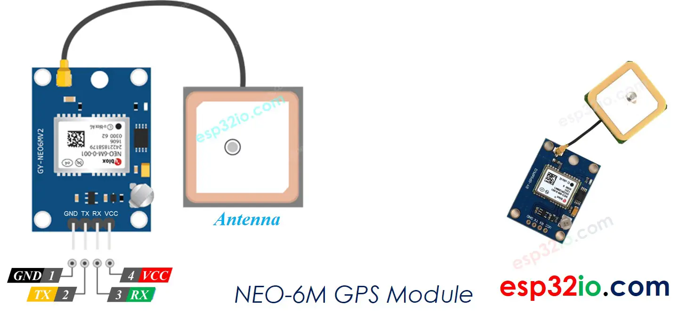

Global Positioning System(NE0-6M) - This module receiver can use upto 22 satellites.
Features are:
1.High security for tracking.
2.Low supply current.
3.Able to track 5 locations per seconds with accuracy.
4.Comes with Power saving mode(psm)

GPS location coordinates on an OLED display connected with the ESP32 board. The location of the vehicle will be displayed in the form of longitude and latitude.
To make our vehicle tracking system even more practical, users can track the location of vehicles on the Blynk app.